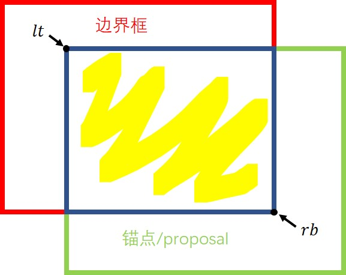
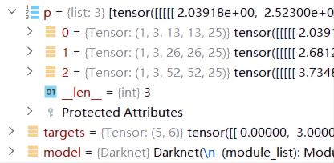
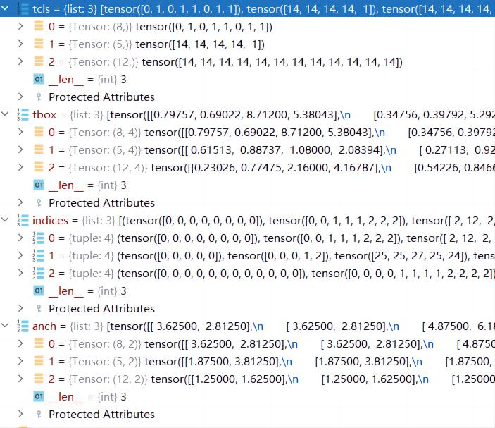

锚点匹配——源码笔记¶
Faster R-CNN机制¶
参考链接：
- https://github.com/WZMIAOMIAO/deep-learning-for-image-processing
- https://github.com/pytorch/vision/tree/master/torchvision/models/detection
计算锚点与边界框的IoU值¶
具体效果如下图所示：

输入：
boxes1、boxes2：真实物体边界框与锚点框，尺寸分别为[M, 4]和[N, 4]，其中M表示当前图片的前景数量，N表示锚点数量
输出：
iou：每个锚点与每个前景的iou值，尺寸为[M,N]
def box_iou(boxes1, boxes2):
"""
Return intersection-over-union (Jaccard index) of boxes.
Both sets of boxes are expected to be in (x1, y1, x2, y2) format.
Arguments:
boxes1 (Tensor[N, 4])
boxes2 (Tensor[M, 4])
Returns:
iou (Tensor[N, M]): the NxM matrix containing the pairwise
IoU values for every element in boxes1 and boxes2
"""
# 计算标签边界框区域面积 # 计算锚点区域面积
area1 = box_area(boxes1)
area2 = box_area(boxes2)
# 依次计算得到左上角的点坐标和右下角的点坐标
# 注意这里会利用广播机制对原数据做扩充，假设标签边界框为N，锚点数量为M，下面两个数据尺寸均为[N,M,2]
# 相当于对与每个标签边界框，都会一一地和每个锚点相匹配
lt = torch.max(boxes1[:, None, :2], boxes2[:, :2]) # left-top [N,M,2]
rb = torch.min(boxes1[:, None, 2:], boxes2[:, 2:]) # right-bottom [N,M,2]
# 得到相交面积的宽与高，注意，这里数据尺寸依旧是[N,M,2]
wh = (rb - lt).clamp(min=0) # [N,M,2]
# 高宽做乘法，得到相交区域的面积
inter = wh[:, :, 0] * wh[:, :, 1] # [N,M]
# 计算IOU值，两个区域的面积相加，减去相交的面积当做分母，相交的面积当做分子
iou = inter / (area1[:, None] + area2 - inter)
return iou
生成匹配编号——Matcher¶
类初始化
需指明三个参数：
high_threshold：前景阈值，大于此值视为前景low_threshold：背景阈值，小于此值视为背景，处于中间锚点不参与损失计算allow_low_quality_matches：是否启用第二套匹配方案，防止有的过小目标没有锚点来匹配
注：
- 目标过小的话，iou可能很小，如果此时当前目标最大的iou值也小于high_threshold，则需该目标不会有匹配的锚点，训练时就会忽略该目标；
- 第二套匹配方案：从前景目标出发，沿锚点方向找出每个前景目标最大的iou值以及对应的锚点，将对应的锚点匹配编号设置为该前景目标编号。
class Matcher(object):
BELOW_LOW_THRESHOLD = -1
BETWEEN_THRESHOLDS = -2
__annotations__ = {
'BELOW_LOW_THRESHOLD': int,
'BETWEEN_THRESHOLDS': int,
}
def __init__(self, high_threshold, low_threshold, allow_low_quality_matches=False):
# type: (float, float, bool) -> None
"""
Args:
high_threshold (float): 大于此值视为前景
low_threshold (float): 小于此值视为背景，处于中间锚点不参与损失计算
allow_low_quality_matches (bool): if True, produce additional matches
for predictions that have only low-quality match candidates. See
set_low_quality_matches_ for more details.
"""
# 视为背景锚点
self.BELOW_LOW_THRESHOLD = -1
# 视为丢弃的锚点
self.BETWEEN_THRESHOLDS = -2
assert low_threshold <= high_threshold
# 判断前景和背景的阈值
self.high_threshold = high_threshold # 0.7
self.low_threshold = low_threshold # 0.3
# 是否启用第二套匹配方案，即对每个物体IOU值最大的锚点也匹配进来，即使IOU值也很小
# 防止有的对象与所以锚点IOU值最大的也不到0.7，导致此目标没有对应的锚点
self.allow_low_quality_matches = allow_low_quality_matches
# 正向传播
def __call__(self, match_quality_matrix):
"""
计算anchors与每个gtboxes匹配的iou最大值，并记录索引，
iou<low_threshold索引值为-1， low_threshold<=iou<high_threshold索引值为-2
Args:
match_quality_matrix (Tensor[float]): an MxN tensor，M个地面真实标签和N个锚点之间的IOU矩阵
Returns:
matches (Tensor[int64]): 尺寸为 N，如果为前景，则对应值为[0, M - 1]，如果为背景，则对应值为-1，如果是被丢弃的数据，则值为-2
"""
if match_quality_matrix.numel() == 0:
# empty targets or proposals not supported during training
if match_quality_matrix.shape[0] == 0:
raise ValueError(
"No ground-truth boxes available for one of the images "
"during training")
else:
raise ValueError(
"No proposal boxes available for one of the images "
"during training")
# M x N 的每一列代表一个anchors与所有gt的匹配iou值
# 这里表示对于每个锚点来说(dim=0)，寻找最匹配的物体框(重合度最高，IOU最大)
# matched_vals代表每列的最大值，即每个anchors与所有gt匹配的最大iou值,matches表示对应最大值所在的索引
matched_vals, matches = match_quality_matrix.max(dim=0) # the dimension to reduce.
if self.allow_low_quality_matches:
# 如果需要启用第二套匹配方案的话(具体见下面)，克隆一份最大值的索引
all_matches = matches.clone()
else:
all_matches = None
# 计算iou小于low_threshold的索引
below_low_threshold = matched_vals < self.low_threshold
# 计算iou在low_threshold与high_threshold之间的索引值 得到IOU大于0.3，小于0.7的锚点
between_thresholds = (matched_vals >= self.low_threshold) & (
matched_vals < self.high_threshold
)
# iou小于low_threshold的matches索引置为-1，设置为负的样本
matches[below_low_threshold] = self.BELOW_LOW_THRESHOLD # -1
# iou在[low_threshold, high_threshold]之间的matches索引置为-2，丢弃的部分
matches[between_thresholds] = self.BETWEEN_THRESHOLDS # -2
# IOU大于0.7的部分不做处理，数值即表示所匹配的对象序号
# 是否启用第一个匹配准则。即与当前目标框IOU最大的也被设置为属于该物体，即使IOU值比较低
# 防止物体A因为所有的锚点IOU都位于0.3到0.7之间，而不被检测到
if self.allow_low_quality_matches:
assert all_matches is not None
self.set_low_quality_matches_(matches, all_matches, match_quality_matrix)
return matches
第二套匹配方案
防止有的过小目标没有锚点来匹配
def set_low_quality_matches_(self, matches, all_matches, match_quality_matrix):
"""
Produce additional matches for predictions that have only low-quality matches.
Specifically, for each ground-truth find the set of predictions that have
maximum overlap with it (including ties); for each prediction in that set, if
it is unmatched, then match it to the ground-truth with which it has the highest
quality value.
"""
# 对于每个gt boxes寻找与其iou最大的anchor，
# 对于每个标签框gt，求得最匹配的锚点框，highest_quality_foreach_gt为匹配到的最大iou值，注意这里dim设为1
highest_quality_foreach_gt, _ = match_quality_matrix.max(dim=1)
# torch.where只传入查询条件时，功能与torch.nonzero一样
# 寻找每个gt boxes与其iou最大的anchor索引，一个gt匹配到的最大iou可能有多个anchor
# 寻找非零部分，返回非零坐标，这里的坐标比较特殊，具体可以去看torch.nonzero学习笔记
gt_pred_pairs_of_highest_quality = torch.where(
torch.eq(match_quality_matrix, highest_quality_foreach_gt[:, None])
)
# gt_pred_pairs_of_highest_quality[:, 0]代表是对应的gt index(不需要)
pre_inds_to_update = gt_pred_pairs_of_highest_quality[1]
# 保留该anchor匹配gt最大iou的索引，即使iou低于设定的阈值
# 把matches更新一遍
matches[pre_inds_to_update] = all_matches[pre_inds_to_update]
YOLO机制¶
代码参考链接：
- https://github.com/WZMIAOMIAO/deep-learning-for-image-processing/tree/master/pytorch_object_detection/yolov3_spp
- https://github.com/ultralytics/yolov3
输入：
p：网络的预测数据；targets：标签数据；model：检测模型，用于提取锚点数据。
例如：

输出：
-
tcls：前景锚点对应的物体类别； -
tbox：gt box相对anchor的x,y偏移量以及w,h（w,h不是偏移量，是特征图上边界框的宽高）； -
indices：图片序号，存有[图片序号，锚点序号（当前物体和第几个锚地匹配），网格序号（前景锚点的位置，对应横纵坐标两个数据）]，锚点序号用于后续生成置信度标签，网格序号又可以看为锚点的中心坐标； -
anch：锚点的宽高尺寸（相对于特征图而言）。（tbox、indices、anch结合可反应物体的边界框位置）

def build_targets(p, targets, model):
# Build targets for compute_loss(), input targets(image_idx,class,x,y,w,h)
nt = targets.shape[0]
tcls, tbox, indices, anch = [], [], [], []
gain = torch.ones(6, device=targets.device).long() # normalized to gridspace gain
multi_gpu = type(model) in (nn.parallel.DataParallel, nn.parallel.DistributedDataParallel)
for i, j in enumerate(model.yolo_layers): # j: [89, 101, 113]
# 获取该yolo predictor对应的anchors
# 注意anchor_vec是anchors缩放到对应特征层上的尺度，因此这里的锚点尺寸是相对于特征图的尺寸(特征图上每个像素点之间的距离视为1)
anchors = model.module.module_list[j].anchor_vec if multi_gpu else model.module_list[j].anchor_vec
# p[i].shape: [batch_size, 3, grid_h, grid_w, num_params]
# gain表示预测特征层的尺寸，后续和targets中储存的相对坐标相乘，会得到特征图上的绝对坐标
gain[2:] = torch.tensor(p[i].shape)[[3, 2, 3, 2]] # xyxy gain
na = anchors.shape[0] # number of anchors，默认3
# [3] -> [3, 1] -> [3, nt]
at = torch.arange(na).view(na, 1).repeat(1, nt) # anchor tensor, same as .repeat_interleave(nt)
# t表示特征图上target的绝对坐标，targets相对坐标乘以特征图尺寸得到
a, t, offsets = [], targets * gain, 0
# Match targets to anchors，将标签和锚点做匹配
if nt:
# 通过计算anchor模板与所有target的wh_iou来匹配正样本
# j: [3, nt] , iou_t = 0.20
# 如果存在target的话，这里先将target中所有的目标与锚点做一次匹配
# 每个目标匹配一个锚点模板，匹配出与目标边界框宽高比例像的锚点模板
# j里行表示每个特征上的锚点数量，列表书target目标数量
# True所在的行表示与target目标(所在的列)所匹配的锚点模板序号
# 注意，这里只是讲target和锚点模板匹配，并不会得到和网格中第几个锚点匹配
j = wh_iou(anchors, t[:, 4:6]) > model.hyp['iou_t'] # iou(3,n) = wh_iou(anchors(3,2), gwh(n,2))
# t.repeat(na, 1, 1): [nt, 6] -> [3, nt, 6]
# 获取正样本对应的anchor模板与target信息(先粗略将匹配的锚点模板表示为正类锚点)
# 若一个边界框标签匹配到多个锚点模板，则对应t会被“复制”多次
a, t = at[j], t.repeat(na, 1, 1)[j] # filter
# Define
# long等于to(torch.int64), 数值向下取整
# b、c分别表示:图片序号image_idx(一个batch内的序号), 物体类别class
b, c = t[:, :2].long().T
# target的中心坐标，物体边界框的中点
gxy = t[:, 2:4] # grid xy
# 物体边界框的宽高(相对于特征图而言)
gwh = t[:, 4:6] # grid wh
# 匹配targets所在的grid cell左上角坐标
# 上下取整，得到左上角坐标
gij = (gxy - offsets).long()
gi, gj = gij.T # grid xy indices
# Append
# gain[3]: grid_h, gain[2]: grid_w
# image_idx, anchor_idx, grid indices(y, x)
indices.append((b, a, gj.clamp_(0, gain[3]-1), gi.clamp_(0, gain[2]-1)))
# gt box相对anchor的x,y偏移量以及w,h
tbox.append(torch.cat((gxy - gij, gwh), 1))
anch.append(anchors[a]) # anchors
tcls.append(c) # class
if c.shape[0]: # if any targets
# 目标的标签数值不能大于给定的目标类别数
assert c.max() < model.nc, 'Model accepts %g classes labeled from 0-%g, however you labelled a class %g. ' \
'See https://github.com/ultralytics/yolov3/wiki/Train-Custom-Data' % (
model.nc, model.nc - 1, c.max())
# tcls表示物体类别
# tbox表示gt box相对anchor的x,y偏移量以及w,h(w,h不是偏移量，是特征图上边界框的宽高)
# indices表示序号，存有[图片序号，锚点序号(当前物体和第几个锚地匹配)，网格序号(前景锚点的位置，对应横纵坐标两个数据)]
# anch存有锚点宽高尺寸(相对于特征图而言)
return tcls, tbox, indices, anch
注：以上仅是笔者个人见解，若有问题，欢迎指正
修改于：2023年2月16日